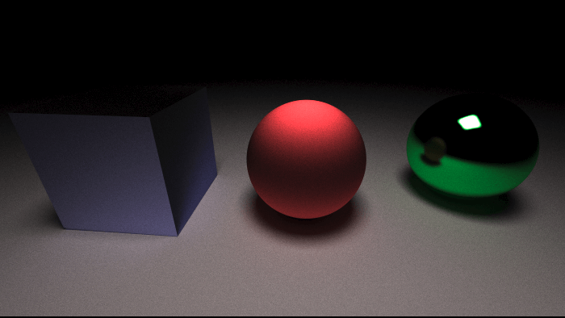

Simulating Light
As a learning exercise, I recently completed Peter Shirley's "Ray Tracing in One Weekend." I am always impressed by the power of computer graphics and how much can be achieved with just a few lines of code, especially when performance is not a primary concern. In this post, I hope to share some of the key takeaways and insights I gained from this experience, as well as provide an overview of my journey in creating a ray tracer.
I found the project to be an ideal balance of complexity and flexibility. It is big enough to require breaking things apart and making design choices, while still being small enough to keep the program manageable. Additionally, I found the output of the ray tracer to be incredibly satisfying, as it is a great visualization of the code and the results of collision detection and matrix mapping
This is the third ray tracer I have created. The first one I wrote was in Python, but it was too slow. The second was in Python with Numpy, which was faster, but the linear maps were confusing. The third one I wrote in Rust. Through this journey, I have learned a lot and I hope that by sharing my experience, it will inspire others to try their hand at creating their own light simulator
Python
Python is an awesome language I use everyday in a variety of tasks and most of the time the speed of the language is not the bottleneck. Python became the bottleneck even after optimizing as much as I could without reverting to C calls. I knew I was fighting an uphill battle and without large algorithm improvements I couldn't squeeze any more out of it without changing the base datatype.
Numpy
Numpy is a Python library which stores and operates on highly optimized multi-dimensional arrays. This combined with linear functions makes it very fast. Using the CPU's linear accelerators such as BLAS and LAPACK. In the future I wish to try again with GPU, there doesn't seem to be much support outside of the CUDA API.
Writing linear maps was a difficult but good learning experience. Some things I learned but might only apply to this narrow case
- Index masks are faster than boolean masks
- Vectorization is key but can make things confusing. This was the first time I heard of the Einstein summation notation "np.einsum('ij, ij->i', m, directions)"
- 32-bit float was the fastest, 64-bit float was slower, 16-bit float slowest
And the results looked okay:

Rust
I wanted to rewrite it in a faster language. I have started working on it in Rust.
Taking 5,000 rays per pixel I created this image in 12 minutes. I also learned a lot about Rust structure and writing it effectively. Here is the build up looks like

219 ms - 1 ray per pixel - 275,800 rays

1 s - 7 rays per pixel - 1,930,600 rays

10 s - 85 rays per pixel - 23,443,000 rays

116s - 1000 rays per pixel - 275,800,000 rays
1124s (18.7 mins) - 10,000 rays per pixel - 2,758,000,000 rays
Writing these ray tracers made me realize why ray tracing isn't the default compared to rasterized rendering even though it could look better and easier to program. There is such a large speed boost when using rasterized rendering that you can have more complex scenes. Computers are fast for doing numerical operations but also the world is full of unfathomably large numbers too. A 100W light bulb would output 10^20 photons (assume 100% efficient, 600 nm light). The latest graphics card can achieve around 10^13 floating operations per second, which is crazy fast, but still 7 orders of magnitude off for each photon to have 1 operation per second. There are many things that can be done to speed it up and we don't need to simulate all of them.
I'm excited to continue learning more about ray tracers and things like:
- GPU acceleration
- Neural network denoising
- Optimized collision detection (ex. AABB)
- Improved sampling methods (ex. PDFs)
https://raytracing.github.io/books/RayTracingInOneWeekend.html
https://www.scratchapixel.com/
https://bheisler.github.io/post/writing-raytracer-in-rust-part-1/